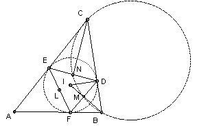

ABC is a triangle with inradius r. The circle through A and C orthogonal to the incircle meets the circle through A and B orthogonal to the incircle at A and A'. The points B' and C' are defined similarly. Show that the circumradius of A'B'C' is r/2.
Solution
Let the incircle have center I and touch the sides BC, CA, AB at D, E, F respectively. Let the midpoints of EF, FD, DE be L, M, N respectively. We show that A', B', C' are L, M, N.

∠IDB = 90o and, since D is the midpoint of the chord DF of the circle center I, ∠IMD = 90o. So triangles IMD and IDB are similar, so IM/ID = ID/IB or IM·IB = r2. Similarly, IN·IC = r2. So BMNC is cyclic. Also I lies on the line BM, but not between B and M, so it lies outside the circle BMNC. Suppose the incircle and the circle BMNC meet at K. Then IK2 = r2 = IM·IB, so IK must be tangent to the circle. Hence the incircle and the circle BMNC are orthogonal. Similarly, the circles ABML and CNLA are orthogonal to the incircle, so L = A' and similarly M = B' and N = C'.
But the triangle LMN is similar to the triangle DEF and half the size. The circumradius of DEF is r, so the circumradius of A'B'C' is r/2.

© John Scholes
jscholes@kalva.demon.co.uk
10 Oct 2002
Last corrected/updated 22 Oct 2002